BetterDesk V3 → V4
Homepage hero 1440
 V3
V3 V4
V4Homepage hero 390
 V3
V3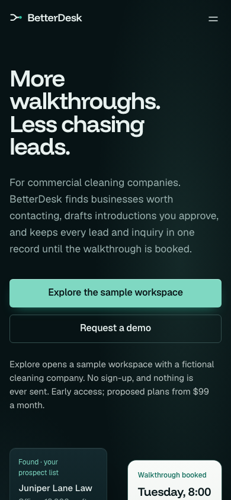
V4Signature story (V3 Act III / V4 journey)
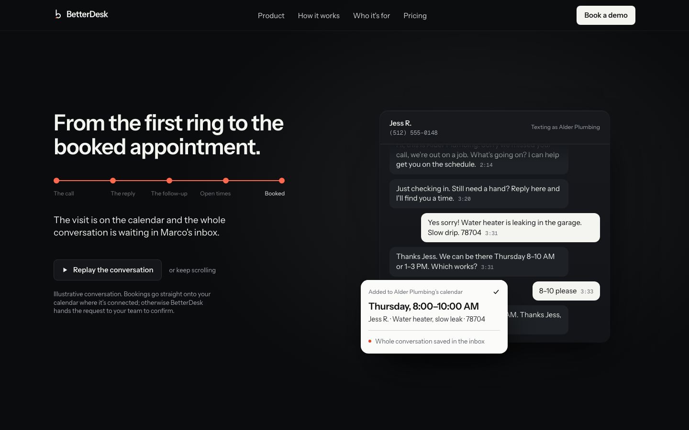
V3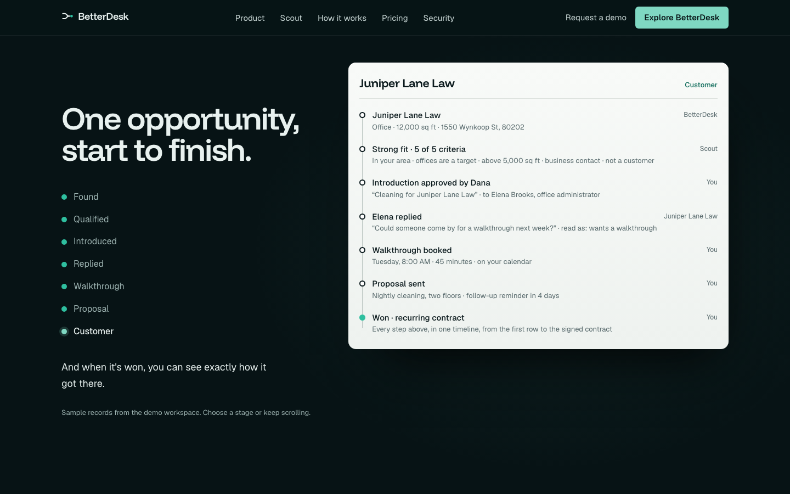
V4Pricing
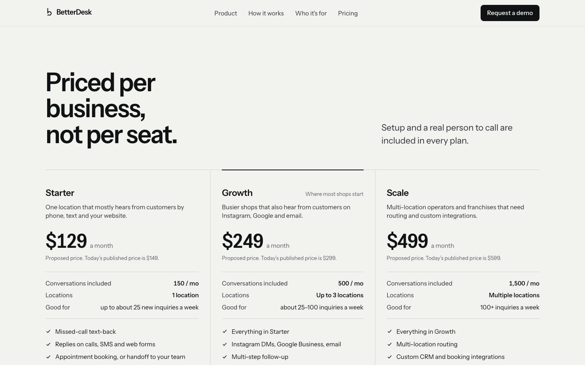
V3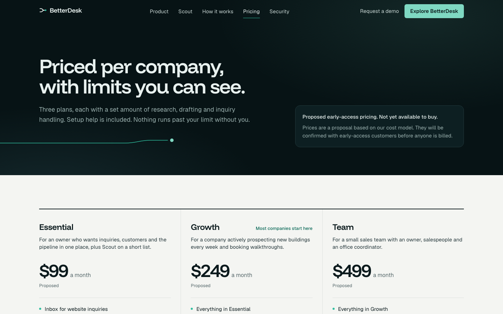
V4Scout page (new in V4)
Did not exist in V3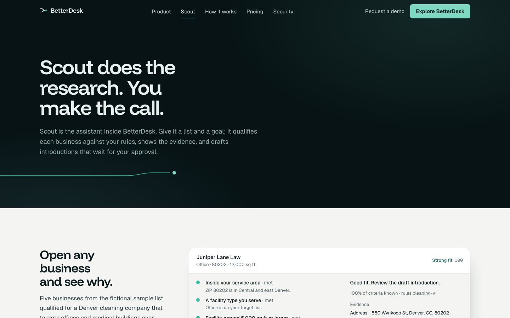
V4 Dashboard: Today (new in V4)
Did not exist in V3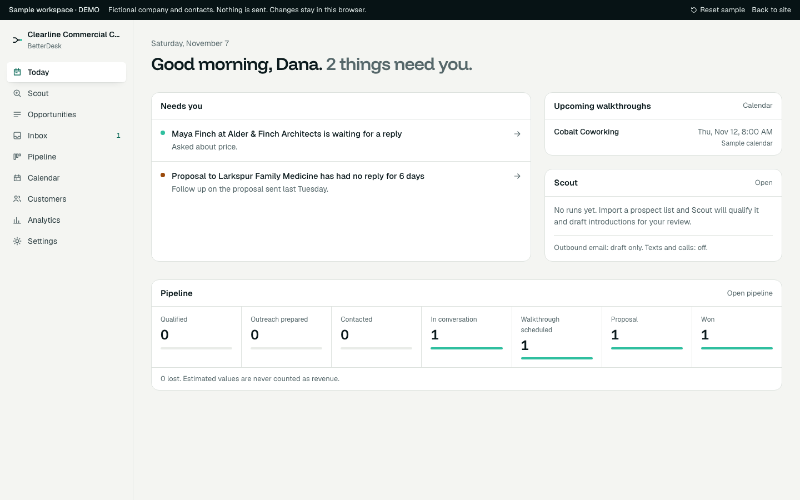
V4 Scout workspace (new in V4)
Did not exist in V3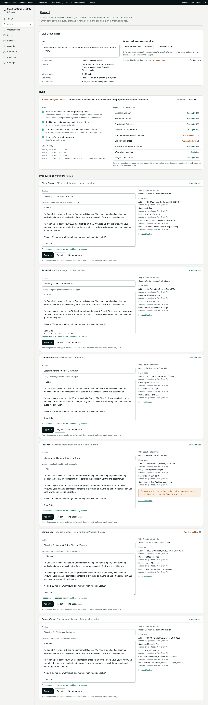
V4 Opportunity inspector (new in V4)
Did not exist in V3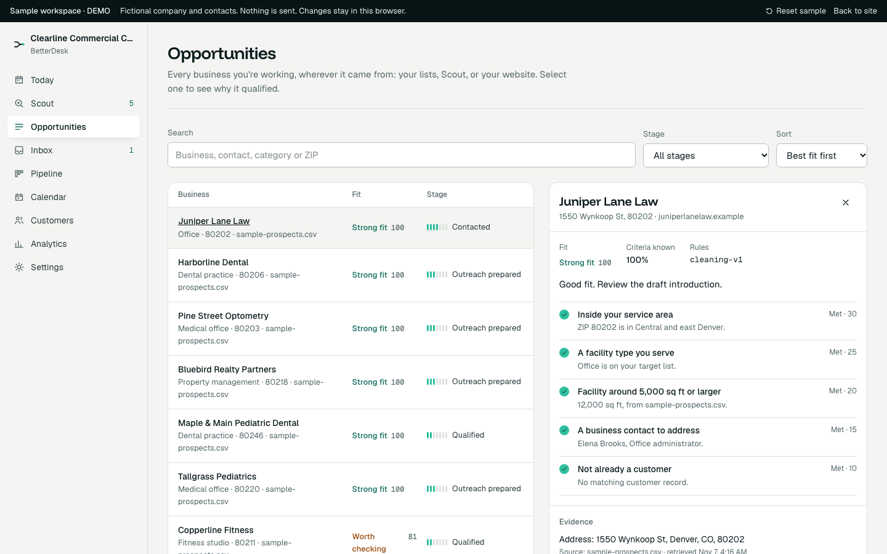
V4 Pipeline (new in V4)
Did not exist in V3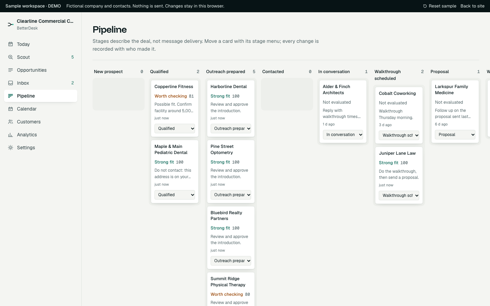
V4 Mobile primary workflow (new in V4)
Did not exist in V3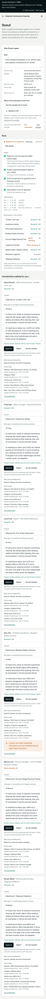
V4